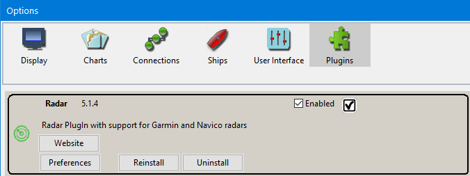
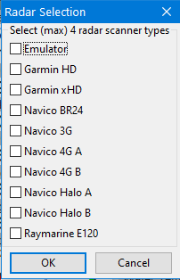
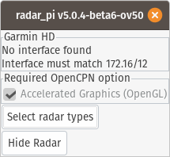
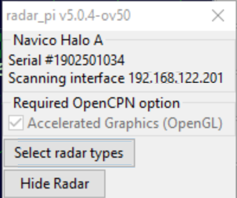

Software installation
The plugin requires the following software requirements:
-
OpenCPN 5.0. or later
-
Firewall disabled or with exceptions enabled for opencpn.exe.
-
OpenGL mode enabled in OpenCPN.
Firewall
If you use Microsoft Windows, you will generally have a firewall, and
some Linux systems also have this. As the radars use multicast, it can
be hard to setup a firewall rule as you don’t just 'open' a particular
port. The simplest solution is to allow opencpn.exe full access to the
network for both receive and transmit.
If you have issues with radar detection, for Garmin check the IP
address, see [[Hardware installation (Garmin)]]. For all radars, disable
the firewall, and if it works then try enabling it with an exception for
opencpn.exe.
Enable OpenGL
Go to the OpenCPN options dialog and on the first pane choose Advanced. Check that the OpenGL option is activated. The OpenGL drawing mechanism uses the GPU to draw graphics instead of the CPU. This is required for the radar plugin as it provides many moving graphics objects. Most computers produced after 2005 have a GPU and operating system that supports OpenGL.
Note: If you use a Raspberry Pi 2 or older, performance will be too low. A Raspberry Pi 3 or 4 might work. With the very latest Raspbian and RPi4 it would work but you need to enable OpenGL in OpenCPN.
Installing the plugin
The recent radar_pi plugin version is avaiable in OpenCPN plugin manager.
-
Start OpenCPN
-
Go to Options > Plugins
-
Update the master catalog, or any other desired catalog.
-
Select radar_pi and install a possible update. Click Enabled.

The plugin should then show the Radar Selection dialog. If it does not, click Preferences for the Radar plugin on the plugin pane.

On the selection dialog choose your radar. If you have a dual range radar and want to view multiple ranges, you can choose both the A and B radars. If you intend to use one of your ranges for the chartplotter and one for OpenCPN so they do not interfere, choose only A or B.
Note: If you have a Navico 3G where the firmware date is before Oct 2014 select radar type BR24. Connect and check the firmware status reported in the Info dialog.
-
Close the selection dialog.
-
Close the options dialog.
Note: On some operating systems the Radar windows appear frozen and do not react to your input when the Options dialog is open; this is a technical restriction caused by the Options dialog being a modal dialog. Just close the OpenCPN Options dialog and then the radar windows will react again.
You should now see one or two Position Plot Indicator or PPI windows floating over your OpenCPN window, and maybe also an Info dialog if your radar has not been detected yet.
If the Info dialog shows, watch it carefully for any hints on what is wrong. For instance, in the picture below you see that a Garmin radar was selected but the plugin cannot find an Ethernet interface with the proper network address:

Fix the issue(s) mentioned by the Info dialog. If it shows Initializing, it is searching all your Ethernet cards for the radar. Once it succeeds, it remembers on which Ethernet card the radar was found and it will be quicker once OpenCPN restarts. If the radar remains initializing immediately after enabling the plugin, try restarting OpenCPN.
The Info dialog shows if:
-
No interface has a proper address (Garmin only) The radar has not been detected yet (all radars send out regular I’m here messages)
-
The OpenGL option has not been selected.
-
Overlay is desired and True Heading or (Magnetic heading plus Variation) is not present
Once the Info dialog disappears, the radar has been found and is ready for operation.
You now have a another icon in the toolbar.
-
If the radar has not been detected yet it will show as:
-
If the radar has been detected it will show:
-
If the radar is detected but hidden it will show:
-
And if the radar is transmitting it will show:
The info window will show whether the scanner has been detected, and whether there is a valid heading input. If a condition is not satisfied this dialog will open automatically. You can also open it using the control menu. As you can see in the Info dialog shows whether you have OpenGL mode enabled. It also shows whether radar presence has been detected, and whether the overlay/heading conditions have been fulfilled.

In the above image the radar type and serial numbers are shown, this shows that the radar has been detected successfully.
Heading and position
For North Up display and radar overlay you must have a heading sensor attached, either via the RI10/11 (Navico Broadband only, preferred) or via NMEA0183 input to OpenCPN directly. If you use a magnetic sensor the variation is also required, but that is easy to do by enabling the WMM plugin.
For radar overlay you must have a boat position via GNSS input to OpenCPN. The most common is a GPS sensor sending NMEA0183 data.
By user requests it has been made possible to occasional use Course Over Ground, COG, from your GNSS as the heading input, but this is not enabled by default. (Using compass heading works more securely.) Go to the Options > Plugins > Radar > Preferences page to enable it.